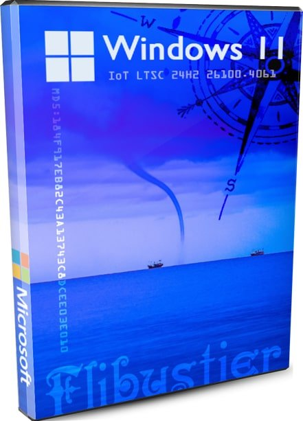
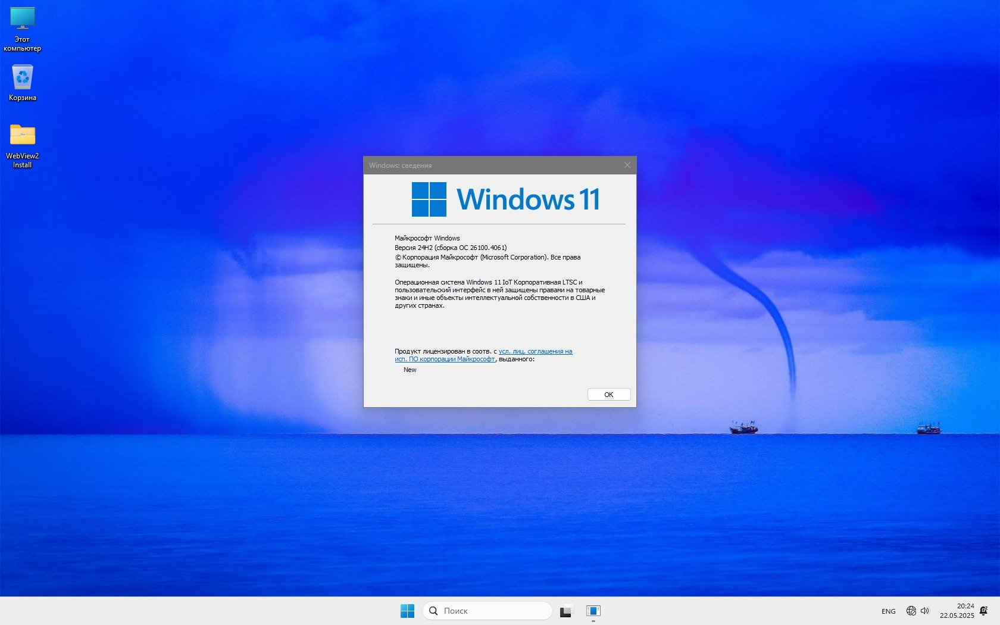
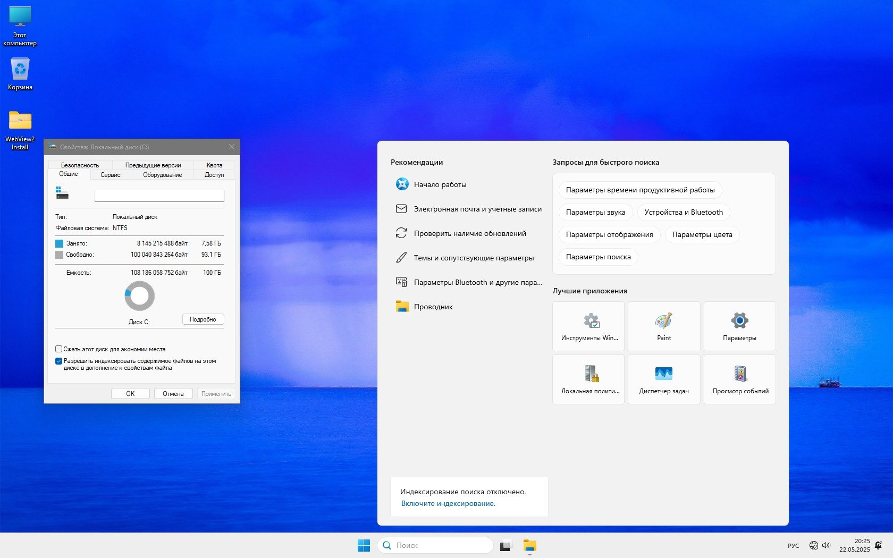
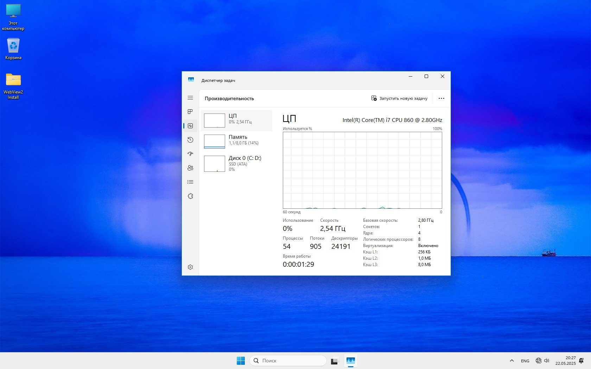
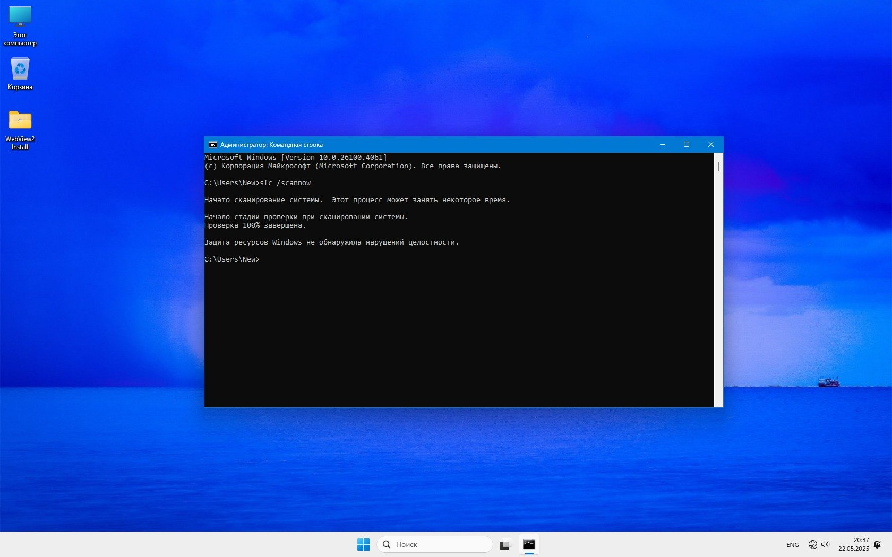

Windows 11 IoT LTSC 24H2 удобная сборка с flblauncher без лишнего

Надежная сборка Виндовс 11 IoT LTSC 24H2 с лаунчером Флибустьера и удобными настройками - без Эджа, Защитника, плиток скачать iso через торрент или по прямым ссылкам. Сборка обеспечена самой продолжительной поддержкой Microsoft и оптимальна для долгосрочного использования.
Периодически сборщики by Revision используют лаунчер Флибустьера для создаваемых сборок. Всё-таки flblauncher – очень удобная штука для установки системы с нужными настройками. К сожалению, Flibustier давно не обновлял его – в то время как лаунчер является самой интересной разработкой в мире сборок.
Для данной системы мы немного изменили дизайн flblauncher, а также убрали некоторые опции, которые для этой сборки не нужны. В частности, Эдж тут вырезан изначально, Защитник тоже изначально выключен – соответственно, опции для их удаления/отключения в лаунчере не нужны. Игровые библиотеки встроены заранее в систему, поэтому нет также опции «Установка VC++ и DirectX». Кроме того, в ходе тестов мы убедились, что Магазин с устаревшего лаунчера не ставится, поэтому убрали также и эту опцию. В придачу из лаунчера был убран тот пиратский софт Флиба, на который ругались антивирусы. Поэтому по итогам антивирусных проверок – эта сборка получилась безупречной.
Отмечен повышенный FPS в The Last Plague, так что вполне возможно, что и на вашем ПК будет тоже высокий FPS в любимых играх - на порядок лучше, чем на оригинале Windows 11. При удачной конфигурация версия 24H2 – очень хороший выбор в плане игровой производительности. А версия IoT LTSC также отлична и в плане долгой поддержки. Практически все любители сборок знакомы с лаунчером Флибустьера, и сложностей при установке практически ни у кого не возникает. UAC в данной сборке выключен по умолчанию, а для повышенной защиты всегда можно его включить обратно. Задача была сделать удобную и производительную сборку 24H2 и, судя по тестам, сборщики by Revision успешно справились с этой задачей.
{kind=link}

{kind=link}

{kind=link}

{kind=link}

Важные особенности сборки
-Сборка доступна по вашему выбору в RU/EN версиях, но все языковые пакеты в ней встроены изначально, а не ставятся при установке. Для выбора EN версии отмечаете опцию «Языковые пакеты» - это необходимая формальность, т.к. они уже встроены, но нужно лаунчеру подать сигнал, что требуется именно английская версия.
-Microsoft продолжает утяжелять Виндовс, поэтому после того, как встроили громоздкий апдейт, образ в итоге получился не очень-то и маленьким по размеру. Конечно, можно было урезать WinSxS (чтоб сильно сократить размер) – но тогда сборка не смогла бы обновляться, а это противоречит ее концепции – «система на долгие годы». Ведь это IoT LTSC с самой продолжительной поддержкой, которую только готова предложить Microsoft.
-Интерфейс улучшен/обустроен твиками, устанавливаются тематические обои, для лаунчера использована белая тема. Контекстное меню – классическое. Система смотрится свежо и современно, работает легко и классно. Удобно также и то, что встроены игровые дополнения, так что все игры/программы, которые от них зависят, - запускаются сразу и без вопросов.
-Эдж корректно деинсталлирован, и система не будет пытаться его подгрузить/установить. Применен очень удачный скрипт для удаления этого назойливого браузера. На рабочий стол мы поставили установщик WebView2. Поэтому, если для нужных вам программ потребуется WebView2 – то можете всегда использовать этот установщик.
-В сборке нет каких-либо заменителей для Пуска (типа StartAllBack), т.к. репаки Флиба, во-первых, уже устарели, во-вторых, некоторым антивирусам они не нравятся. Кроме того, даже сама кнопка Пуск выставлена по центру, хотя обычно мы ее перемещаем влево в сборках. Это легко сможете поменять в соответствующих настройках Панели задач.
-В версии IoT LTSC 24H2 изначально классический Калькулятор, Паинт, Блокнот. В придачу мы еще разрешили и стандартный Просмотрщик. Установка Магазина каким-либо способом на данной сборке не тестировалась, да и самого Магазина для IoT LTSC не предусмотрено. Из всех плиток в данной версии присутствовал только SecHealthUI, который мы вырезали попутно с отключением Защитника.
-Игровая производительность – на высоте (возможно, благодаря удачному билду и набору твиков). Обращаем внимание также на то, что Игровой режим в сборке присутствует и по умолчанию находится во включенном состоянии (применен соответствующий твик).
Дополнительная информация
После того, как установка завершена, автоматически отрабатывает скрипт для применения обоев и финальных настроек. После этого автоматически происходит финальная перезагрузка, и система начнет подтягивать драйвера (если вы не отключили в лаунчере соответствующую опцию). Как обычно – советуем не спешить расставлять опции в лаунчере, чтобы не пропустить что-то важное. Довольно часто почему-то забывают отметить опцию «Активировать» и потом ищут какие-то альтернативные варианты. Поэтому не спеша выставьте именно те настройки в лаунчере, которые вам нужны.
В ISO образах допускается установщик браузера и некоторые пользовательские изменения по умолчнию для браузера Chrome, каждый может без проблем изменить настройки браузера на свои предпочтительные. Все авторские сборки перед публикацией на сайте, проходят проверку на вирусы. ISO образ открывается через dism, и всё содержимое сканируется антивирусом на вредоносные файлы.